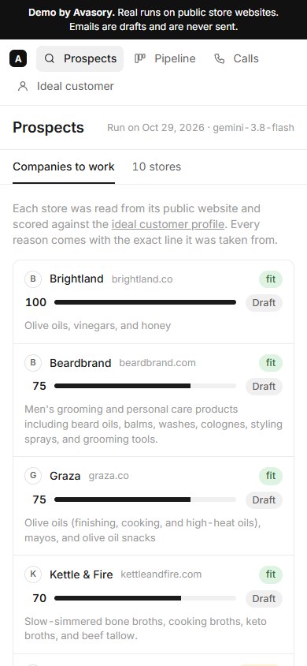

sales desk.
Two small AI tools for selling: one researches prospects, the other turns a sales call into CRM notes.
I built them the way I’d want to use them: every claim the AI makes comes with the exact line it was taken from, or it doesn’t count.
- Node.js
- Gemini API
- HTML
- CSS
- Vanilla JavaScript
- Playwright

What I set out to do
Find stores that fit, write a first email worth sending, and keep what was said on a call. The research reads only each store’s public website. The emails are drafts: nothing here sends anything.
Decisions I made
- Every AI claim needs a quote, checked word for word against the page. If it isn’t there, the claim is dropped.
- Some checks are plain rules, not AI: product count, FAQ questions, and whether a quote really says what it’s used for.
- Emails stay drafts. There’s a Copy button, no Send button, and no email code at all.
- A deal only gets a dollar value when the buyer says a budget on a call.
- The test calls are role-plays and say so: one test script, read once by AI voices and once by me.
How it works
Node.js scripts do the reading and the AI work, save each run as a JSON file, and plain pages show the result. The browser never talks to the AI.
From a call to the board
Every field has to point at the line of the transcript it came from, or it isn’t saved.
- Recording
- Transcriptwith timestamps
- Deal fieldspain, budget, who decides, timing
- Each field checkedits quote must be in the transcript
- Deal moveswith the reason
Under the hood
What I used, and why.
The plan, and where it stands
- DoneProspect research on 10 real public stores: 9 scored with sources and a draft email, 1 left out because it couldn’t be confirmed as a Shopify store.
- DoneCall to CRM, tested with a synthetic call and with my own recording reading the same script.
- PendingAn unscripted call, with me as the seller.
Prospect research
Stores scored against the ideal customer. Open one to see each reason with its source and the draft email.
Both screens are live: click, scroll and type inside them.
Call to CRM
Two test calls of the same script: one read by AI voices, one recorded by me. The transcript, the deal fields with the line each came from, and the deal moved on the board.
Both screens are live: click, scroll and type inside them.
What I can’t claim yet
No meetings booked and no deals closed with this. It’s a demo. The emails were never sent, the stores were only read and never contacted, and both calls so far are role-plays of the same test script.